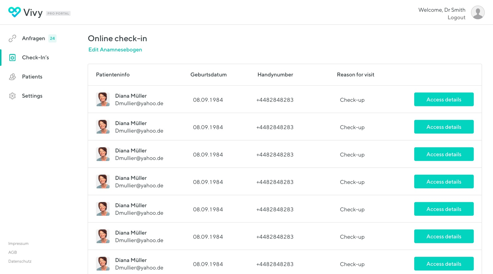

Document requestsHelping more medical record requests reach completion.
The problem
Your health records exist.
They just don't exist
anywhere useful.
In Germany, a patient's medical history is often fragmented. Lab results sit with one provider, X-rays with another, prescriptions arrive on paper, and discharge letters end up in a folder at home. Sharing that information between healthcare providers still relies on phone calls, faxes and in-person requests, introducing unnecessary delays and administrative overhead.
Vivy set out to change that by giving patients a secure, encrypted place to store their health records, request medical documents digitally, and share them directly with healthcare professionals whenever they chose.
As one of the first product designers, my role went well beyond designing screens. We were building a new kind of product in a heavily regulated industry, so design meant establishing research practices, defining product principles, and creating a shared approach to decision-making. Every feature had to balance usability, security and trust, while staying honest about what the product could and couldn't yet do.

First run: setting the tone before a single document is added
Document request & sharing
The core flow: request a
document, receive it, share it.
Encrypted throughout.
A patient opens the app, sends a request to their GP for last month's blood results, and receives them directly to their phone, with no phone calls, no waiting rooms and no paper. Once there, files can be shared with any other practitioner in seconds, with access controlled entirely by the patient.

Requesting, uploading and finding a doctor: three entry points into the same flow

An early flow map, sketching how a request could reach a doctor, and where it could quietly break down. That risk turned out to be the real story (next).
The trickiest UX challenge: expectation management
Better to be honest with people
than reassuring.
When we launched, many document requests went unanswered, because most doctors had never heard of Vivy. The technology worked. The ecosystem wasn't ready yet. Patients felt the app was broken. The problem wasn't the product; it was that we'd set expectations we couldn't yet meet.
So rather than hiding the uncertainty behind a progress spinner, I made it visible. The request-status system kept people informed: what was pending, why it might be delayed, and what their options were, with small explanatory moments along the way so patients understood the process, not just the interface.
It was one of the better decisions I made at Vivy: trust people with honest information rather than paper over a messy reality with reassuring-looking UI. Patients coped far better with honesty than with false confidence.


Replacing a progress spinner with a specific status, a reason, and a next step
"Building a product that's ahead of its supporting infrastructure teaches you something most UX courses don't: how to manage the gap between vision and reality with dignity."
James Ciclitira, on VivyThe Munich sprint: invoice management
Four days with Allianz.
One major feature, defined properly.
Private healthcare in Germany carries a specific burden: patients pay out-of-pocket and file reimbursement claims with their insurer. It is a time-consuming, paper-heavy process that causes real anxiety. I travelled to Munich to run a four-day design sprint with Allianz, to understand both patient and insurer needs before building a single screen.
Day 01
Stakeholder mapping
Unpacking Allianz's internal workflows and the legal requirements for invoice processing.
Day 02
Patient pain journey
Mapping every frustration, every piece of confusion, every moment of delay in the current process.
Day 03
Rapid prototyping
Multiple invoice submission flows, tested on-the-spot with real patients and Allianz staff.
Day 04
Validation & sign-off
Working prototype. Feature requirements aligned. A shared language between design, tech, and insurer.

The invoice flow that came out of the sprint, validated with Allianz and real patients
File sharing & the practitioner interface
The patient experience only
works if doctors trust it too.
I also designed the practitioner-facing side: a secure, direct connection that made file sharing feel professional and trustworthy for both clinician and patient. The key design challenge was building enough trust signals that a doctor would be willing to integrate it into their workflow.


The patient's phone (left) and the practitioner's portal (right): two contexts, one trust model

The Pro Portal's online check-in: patients arrive with paperwork already done, staff see who's due at a glance